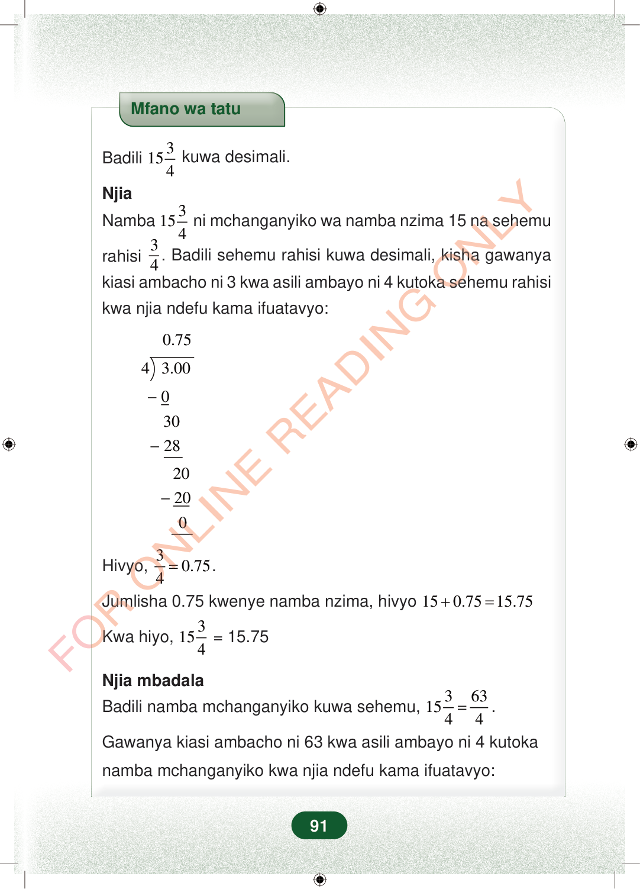

Mfano wa tatuBadili315 4kuwa desimali.NjiaNamba315 4ni mchanganyiko wa namba nzima 15 na sehemurahisi34. Badili sehemu rahisi kuwa desimali, kisha gawanyakiasi ambacho ni 3 kwa asili ambayo ni 4 kutoka sehemu rahisikwa njia ndefu kama ifuatavyo:0.7543.00−−03028−20200Hivyo,30.754=.Jumlisha 0.75 kwenye namba nzima, hivyo150.7515.75+=Kwa hiyo,315 4= 15.75Njia mbadalaBadili namba mchanganyiko kuwa sehemu,36315 44=.Gawanya kiasi ambacho ni 63 kwa asili ambayo ni 4 kutokanamba mchanganyiko kwa njia ndefu kama ifuatavyo:91
Mfano wa tatu
Badili 3 15 4 kuwa desimali.
Njia
Namba 3 15 4 ni mchanganyiko wa namba nzima 15 na sehemu
rahisi 3
4 . Badili sehemu rahisi kuwa desimali, kisha gawanya
kiasi ambacho ni 3 kwa asili ambayo ni 4 kutoka sehemu rahisi
kwa njia ndefu kama ifuatavyo:
0.75
4 3.00
0 30 28
20 20 0
Hivyo, 3 0.75 4 = .
Jumlisha 0.75 kwenye namba nzima, hivyo 15 0.75 15.75 + =
Kwa hiyo, 3 15 4 = 15.75
Njia mbadala
Badili namba mchanganyiko kuwa sehemu, 3 63 15 4 4 = .
Gawanya kiasi ambacho ni 63 kwa asili ambayo ni 4 kutoka
namba mchanganyiko kwa njia ndefu kama ifuatavyo:
91
Mfano wa tatu unaonyesha kubadili 15 na robo tatu kuwa desimali. Njia inaanza kwa kueleza kuwa 15 3/4 ni namba mchanganyiko.Mfano wa tatuBadili <math><mrow><mn>15</mn><mfrac><mn>3</mn><mn>4</mn></mfrac></mrow></math> kuwa desimali.NjiaNamba <math><mrow><mn>15</mn><mfrac><mn>3</mn><mn>4</mn></mfrac></mrow></math> ni mchanganyiko wa namba nzima 15 na sehemu rahisi <math><mfrac><mn>3</mn><mn>4</mn></mfrac></math>.Badili sehemu rahisi kuwa desimali, kisha gawanya kiasi ambacho ni 3 kwa asili ambayo ni 4 kutoka sehemu rahisi kwa njia ndefu kama ifuatavyo:Mgawanyo mrefu unaonyesha 3 kugawanywa kwa 4 na kupata 0.75. Hivyo 3/4 ni sawa na 0.75.Hivyo, <math><mrow><mfrac><mn>3</mn><mn>4</mn></mfrac><mo>=</mo><mn>0.75</mn></mrow></math>.Jumlisha 0.75 kwenye namba nzima, hivyo <math><mrow><mn>15</mn><mo>+</mo><mn>0.75</mn><mo>=</mo><mn>15.75</mn></mrow></math>Kwa hiyo, <math><mrow><mn>15</mn><mfrac><mn>3</mn><mn>4</mn></mfrac><mo>=</mo><mn>15.75</mn></mrow></math>Njia mbadalaBadili namba mchanganyiko kuwa sehemu, <math><mrow><mn>15</mn><mfrac><mn>3</mn><mn>4</mn></mfrac><mo>=</mo><mfrac><mn>63</mn><mn>4</mn></mfrac></mrow></math>.Gawanya kiasi ambacho ni 63 kwa asili ambayo ni 4 kutoka namba mchanganyiko kwa njia ndefu kama ifuatavyo: